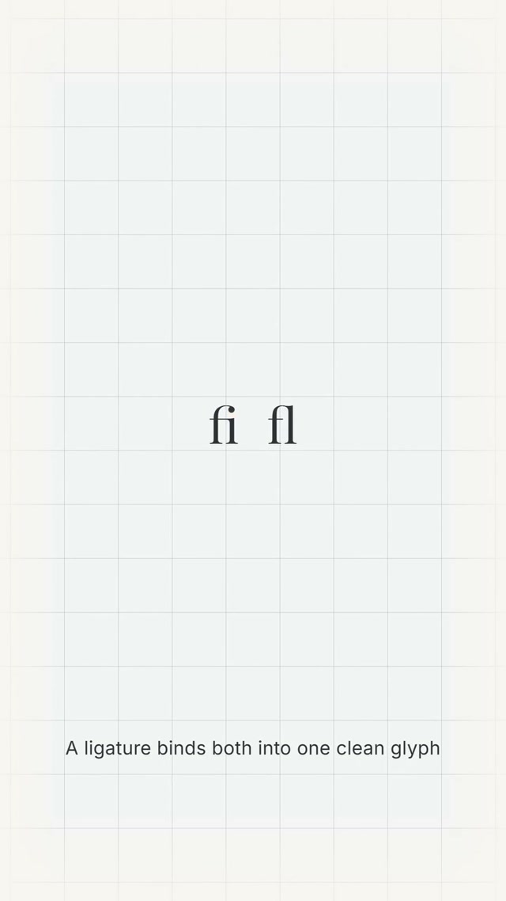

Ligatures fix letterform collision (the fi/fl fix)
When a letter's shape physically crowds the next letter (the f's hook against the i's dot or the l's stem), the fix isn't spacing, it's a ligature: a single fused glyph designed to replace the pair, and most design tools need it manually re-enabled via the OpenType panel.
Kerning adjusts the SPACE between two separate letterforms. Ligatures solve a different problem: when two adjacent letterforms' PHYSICAL SHAPES occupy the same visual territory no matter how much space you add between their origin points. In many serif (and some sans) typefaces, the lowercase f has a curved terminal hook that overhangs to the right at cap-height/ascender level, the exact same vertical band where a following i's dot or l's ascender stroke sits. Set them next to each other at normal tracking and the hook's curve touches or merges with the dot/stroke above the x-height, a cluttered collision that no amount of letter-spacing can fix, because the collision is in the SHAPES, not the gaps. The historical fix, going back to metal movable type, is to stop treating 'f' + 'i' as two independent sorts and cast (or, digitally, encode) the combination as ONE glyph where the f's hook is redrawn to connect directly into the ascender of the next letter, literally replacing the separate dot with a joined stroke (from Latin ligare, 'to bind'). Digital OpenType fonts inherited this exact shape and ship it as a discretionary/standard GSUB feature ('liga' / 'Standard Ligatures'). The catch: several modern design tools (Figma, Sketch, others) ship this feature turned OFF by default for editing/performance reasons, silently reintroducing a collision problem typesetting solved centuries ago.
1) Recognize the symptom: crowding specifically in fi, fl, ff, ffi, ffl combinations in serif or display-sans type. 2) Don't reach for kerning/tracking, it only moves letters apart as blocks and can't fix a shape-level overlap. 3) In any design tool, open the type/OpenType panel and confirm 'Ligatures' ('liga'/'Standard Ligatures') is ON, don't assume the default. 4) On the web, confirm `font-feature-settings` or `font-variant-ligatures` hasn't been reset to `none`/`0` (some CSS resets or `text-rendering: optimizeSpeed` disable it), and that the served font file (especially a subsetted webfont) still includes the GSUB ligature table. 5) Treat ligature state as a first-class check on any pixel-exact match against a serif or editorial reference.
On-screen serif type sample of unligatured 'fi' and 'fl' with an orange circle marking the exact touch-point between the f's hook and the i's dot. Etymology callout: 'ligature, From ligare: to bind. Merges two characters into one glyph.' Historical photo of a physical Garamond fi-ligature metal sort (movable type, credited Wikimedia Commons/CC BY-SA). UI demonstration of a ligatures toggle shown OFF ('Some design tools disable it') then ON with a checkmark ('check the OpenType panel'). No numeric ratios or kerning values given, this is a qualitative/structural lesson, not a measured spec.
Low-frequency but real: Solen's type is Inter Tight (display) + Inter (body), sans-serif fonts where the f-hook is shorter and collision far less dramatic than the video's serif example, but the same OpenType mechanism still applies. German/French UI copy does contain fi/fl/ff pairs (e.g. 'Filter', 'Flexibel', 'Öffnungszeiten'), so if webfont subsetting, a CSS reset, or an explicit `font-feature-settings: 'liga' 0` ever strips standard ligatures, tightly-tracked large headings (the clamp(18px,2vw,20) H2, hero type) are where a stray collision would first surface. Action: when doing pixel-exact matching against a serif reference or auditing font-loading/CSS-reset code, confirm ligatures aren't disabled; this is a thing to watch, not a live bug in the current Inter-based system.